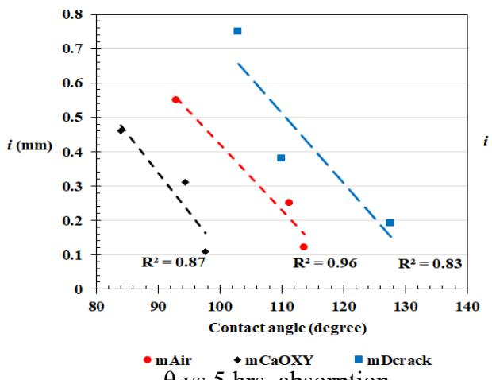
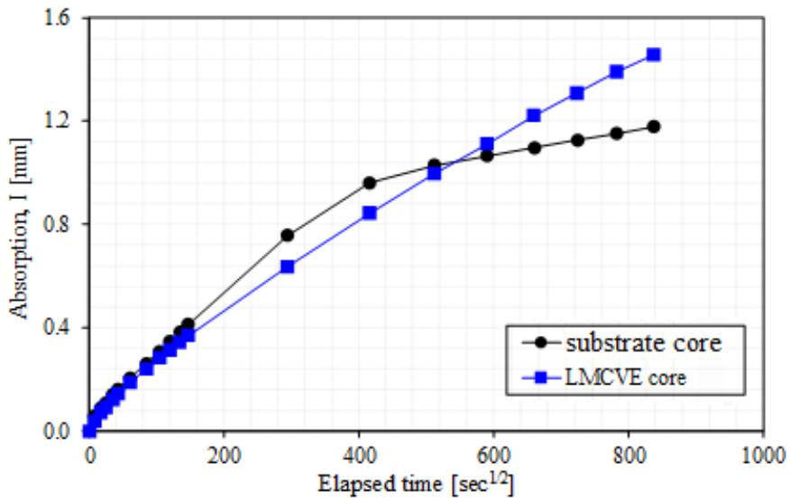
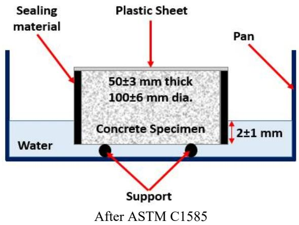
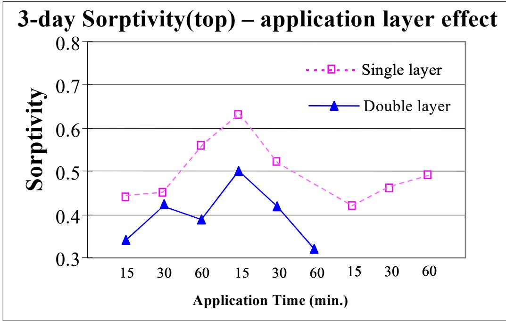
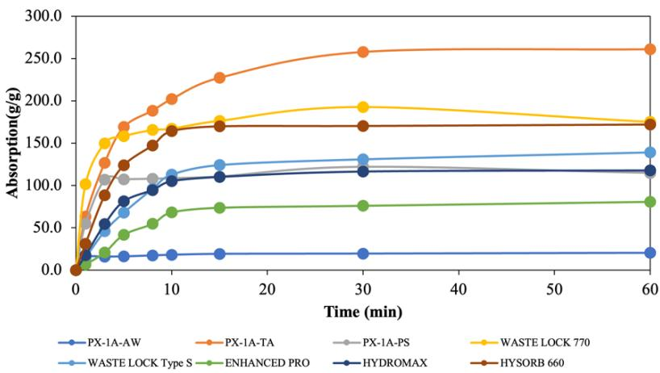

Sorptivity
Sorptivity is a specific measure of Low-Permeability Concrete that quantifies how such concrete takes in water via capillary action when exposed to a free water surface [1]. Defined as the constant rate at which concretes and mortars absorb water under these conditions, this metric serves as an indicator of the material’s pore structure characteristics [1]. The sorptivity coefficient is calculated as the slope of the mass gain per unit area versus the square root of time.
Sources (8)
Introduction to Sorptivity and Pore Structure
Sorptivity measurements provide a more sensitive indication of subtle microstructural changes in near-surface concrete caused by varying curing materials and procedures than conventional compressive or flexural strength tests [1]. By comparing sorptivity values, an understanding of pore connectivity in cementitious systems is enabled, providing insights into resistance against moisture-induced deterioration mechanisms such as freeze-thaw cycles and sulfate attack [2].
Concrete mixtures with a high water-to-cementitious materials ratio possess an increased volume of capillary pores that saturate relatively quickly, resulting in an elevated initial rate of absorption [3]. Furthermore, certain calcareous aggregates exhibit a pore system that readily absorbs water yet releases it slowly during drying, which increases the risk of the aggregate remaining in a critically saturated state [3].
 Steve Lane, Virginia Transportation Research Council Figure 5. Initial and secondary absorption [3]
Steve Lane, Virginia Transportation Research Council Figure 5. Initial and secondary absorption [3]
Mechanisms of Capillary Suction and Transport
The Young-Laplace equation governs capillary suction by defining transport as a function of surface tension, contact angle, and capillary pore radius; within this framework, increasing the contact angle reduces molecular attraction between water and concrete, thereby decreasing absorption capacity [4]. On absorption curves, the nick point separates initial capillary suction from secondary diffusion-dominated transport, and hydrophobic treatments minimize this rate by impeding capillary processes or altering simultaneous capillary-diffusion dynamics [4].

presents the water contact angle results as a function of water absorption. θ vs 5 hrs. absorption [4]A clear difference in curvature between substrate concrete and LMC-VE overlay specimens indicates that the substrate attained saturation more quickly, whereas the overlay took a longer time to saturate due to a relatively less connected pore network [2]. This results in moisture movement occurring at a slower initial rate but with a prolonged transition time between the initial and secondary sorptivity regimes [2].

Comparison between sorption behavior of substrate concrete core and LMC-VE core [2]Test Procedures and Measurement Methods
The sorptivity test procedure involves sealing lateral surfaces with five-minute epoxy, covering the top surface with plastic, and immersing the bottom cross-section to a maximum depth of 3 mm in tap water, with weighing occurring at intervals including 1 minute, 5 minutes, 10 minutes, 20 minutes, 30 minutes, and 1 hour until the slope of mass gain per unit area versus square root time stabilizes [1]. Similarly, water sorption testing is conducted according to ASTM C 1581 on specimens dried and sealed on three surfaces before placement on a thin water film to calculate both initial absorption rates (1 minute to 6 hours) and secondary rates (1 to 6 days) [5]. The initial sorptivity value is determined as the slope of the linear fit line from the beginning of the test up to a point where a clear change of slope or curvature occurs, while secondary sorptivity is calculated from that transition point until the end of testing; furthermore, according to ASTM C1585, initial sorption (Si) specifically refers to the slope of the least squares linear fit for measurements taken during the first 6 hours [2]. The degree of saturation at the intersection between these initial and secondary absorption phases indicates the point where the capillary pore system becomes fully saturated [3].

Specimen setup in ASTM C1585 [3]Regarding material characteristics, the air content of all concrete mixes was in the range of 5.0% to 5.8% [6], and because the correlation coefficients of all specimens are not less than 0.98, it is indicated that the initial water absorption index can be used to evaluate the water absorption characteristics of the concrete surface [6]. Notably, air permeability testing does not correlate with water absorption rates for sealer-treated concrete because it evaluates gas movement rather than liquid transport; instead, desorption or wettability tests are more effective indicators of durability performance [4].
 Air (gas) permeability index for concrete [4]
Air (gas) permeability index for concrete [4]
Relationship with Moisture Content and Hydration
Sorptivity correlates closely with moisture content (MC) and degree of hydration (α), as expressed by the equation sorptivity = 29.11 - 3.56(MC) - 0.53α + 0.07(MC)·α (R² = 0.79) [1]. Statistical analysis confirms a linear relationship between sorptivity, moisture content, and degree of hydration without requiring higher-order terms, as residual plots show no conic patterns that would indicate non-linearity [1]. Consequently, higher initial moisture content or degree of saturation reduces both the amount of water absorbed and the sorptivity rate [7]. A critical degree of saturation threshold exists at approximately 85%, below which freezing-thawing deterioration is unlikely to occur; sealers that significantly reduce absorption delay the time required for concrete to reach this critical saturation level [4].
 Relationship Between Results from Furnace and TGA Tests [1]
Relationship Between Results from Furnace and TGA Tests [1]
Regarding internal moisture management, concrete mixtures containing SAPs exhibited lower shrinkage up to 7 days, likely due to retention of water in the SAPs [6]. This is due to the release of the stored water in the SAP, enhancing the internal moisture of the concrete and thus minimizing shrinkage stresses [6].
 Drying shrinkage and autogenous versus concrete age in conventional concrete (left) and high-performance concrete (right) after internal curing [6]
Drying shrinkage and autogenous versus concrete age in conventional concrete (left) and high-performance concrete (right) after internal curing [6]
Influence of Curing Methods and Compounds
Sorptivity is closely related to pore structure characteristics, and because poor curing causes a less developed near-surface microstructure, it results in high sorptivity. The Iowa DOT curing study found that sorptivity is the most sensitive test for evaluating curing effectiveness. This influence of curing on sorptivity is most pronounced within approximately 30 mm (1.2 inches) from the concrete surface, where moisture loss to the atmosphere significantly alters pore structure development [1]. Consequently, near-surface concrete has higher sorptivity than internal concrete due to moisture loss. Regarding specific treatments, immersing concrete in Ossian Season One slows the water absorption rate, with both initial and secondary sorption values lower than those for plain water cured specimens, suggesting the formation of an impermeable barrier at the concrete skin [5]. Furthermore, higher-efficiency curing compounds produce lower sorptivity, and optimal application timing minimizes sorptivity. In air curing conditions, applying a curing compound at 30 minutes after casting results in lower sorptivity compared to application at 15 or 60 minutes, as early application may trap bleed water while late application allows surface drying [1].

Effect of Curing Compound Application and Curing Condition on Sorptivity [1]Specific curing compounds exhibit distinct sorptivity performance rankings, with compound 2255 (C98.1) yielding the lowest values and compound 1600 (C89.0) producing the highest values under identical application techniques [1]. While double-layer application reduces sorptivity more than single-layer, double-layer applications do not significantly improve properties when using high-efficiency-index compounds like 1645 (C95.9) or 2255 (C98.1), though they clearly enhance concrete properties compared to single-layer applications of low-efficiency-index compounds such as 1600 (C89.0) [1]. In field-cast LMC-VE specimens cured for 3 days in water followed by air curing, the initial sorptivity was similar to that of the substrate concrete; however, while substrate absorption stabilized during testing, the overlay’s absorption continued to increase, resulting in a much higher secondary sorptivity value [2]. Additionally, all concrete specimens before being processed were cured for 28 days [6].
 Effect of Type of Curing Compound on Sorptivity [1]
Effect of Type of Curing Compound on Sorptivity [1]
Effect of Deicing Salts and Environmental Factors
The presence of deicing salts alters the viscosity, water activity, surface tension and density of the solution [7], and as salt concentration increases, both the rate of absorption and total absorption decrease proportionally with the square root of the ratio of surface tension to viscosity [7]. Furthermore, samples containing deicing salts may gain mass at high relative humidity due to the hygroscopic nature of the salt, leading to a higher degree of saturation compared to samples without salts [7]. While hydrophobic sealers can transmit vapor to decrease concrete saturation when elements are not in continuous water contact, they may adversely affect durability during freezing-thawing cycles by trapping moisture behind a sealed layer or causing internal pressure from supercooled water [4].
 Specimen mass changes with F-T cycles [4]
Specimen mass changes with F-T cycles [4]
Internal Curing Agents: Superabsorbent Polymers (SAP)
Lightweight fine aggregate particles act as internal reservoirs that replenish water depleted during cement hydration without altering the batch water-to-cement ratio [8]. Different from LWFA, dry SAP can be mixed with raw concrete materials before water is added during concrete mixing, thus facilitating the uniform dispersion of SAP [6]. The quantity of liquid absorbed, absorption kinetics and potential desorption, and stability of the product formed in solution depend on thermodynamics and the osmotic pressure differences between the gel network and the exterior environment [6]. An increase in the absorptivity of the SAPs was observed within the first 15 minutes of immersion in tap water, after which time the absorbance reached a plateau [6]. However, the absorptivity measured in the filtered solution was less than that in tap water because the alkaline properties of the cement-filtered solution reduced the osmotic pressure responsible for the SAPs’ fluid uptake under load-free conditions [6]; this reduction is due to the interaction between the anionic carboxylate groups of the SAPs and the Ca²⁺ ions in the pore solution, which ultimately causes the polymer chains to lose their charge [6]. Regarding desorption, in the first 100 minutes, the relationship between the amount of water lost and the elapsed time is almost linear, representing water loss from the SAP surfaces due to weak van der Waals forces [6], while the desorption curve flatlined later in the drying period because the bound water close to the cores of the SAP particles or the water trapped by the hydrogen was difficult to lose [6].

Absorption of various SAPs in tap water [6]Among tested products, Waste Lock 770 exhibited the highest initial absorption rate in both solutions, probably attributed to properties such as higher molecular weight and larger particle size [6], and while all three SAP products tested performed similarly to each other [6], the desorption rate for PX-1A-AW is the highest, while that for PX-1A-TA is the lowest [6]. The control specimen and specimens treated with Hydromax, BASF, and PX-1A-TA have initial water absorption indexes of 0.0051, 0.0064, 0.0066, and 0.0078 mm/s0.5, respectively [6]. The secondary water absorption ability of all disc specimens with SAPs (ranging from 1 to 7 days) is higher than that of the control concrete, reflecting the fact that their permeability is greater than that of the control specimens [6], which may be mainly correlated to the porosity, pore connectivity, and swelling capacity of the SAPs in their respective cement matrixes [6]. The PX-1A-TA mixture seemed to retain slump the best, which can possibly be attributed to its higher cross-linking compared to other SAPs, resulting in its larger absorption capacity [6], though slump loss tests indicated that the SAPs used in this study were absorbing some water over at least the first 30 minutes [6]. Incorporation of SAP and additional water into the concrete slightly delayed both the initial and final setting times relative to the control mixture [6]; this delay may be attributed to a potential increase in the effective w/c ratio, likely resulting from insufficient water absorption by the SAP during mixing [6], as this increase may be attributed to the incomplete absorption of additional water by the SAP, which could increase the effective w/c ratio and lead to a more porous matrix [6]. Finally, when rewetted, the SAP particles regained their swollen state, indicating that their structure had remained intact, and additionally, SAP particles did not appear to agglomerate, promoting effective internal curing [6].
 Absorption of various SAPs in cement pore solution [6]
Absorption of various SAPs in cement pore solution [6]
Impact of SAP on Concrete Mechanical Properties and Durability
The amount of SAP and WRA required to achieve similar slumps was inversely related to the product absorption [6]. While mixtures made with SAP had slightly higher initial air contents than the control, which may be related to the addition of extra water, the SAP, or both [6], the VKelly index of the concrete mixtures with SAPs was higher than that of the control, potentially attributed to the release of water from the swollen SAP particles under vibration [6]. All types of SAP could effectively reduce the early shrinkage of concrete [6], a reduction that appears to be related to the absorption of the product [6]. Furthermore, in comparison to the control, samples treated with dry SAPs demonstrated a significant reduction in water absorption [6], whereas samples modified with presoaked SAP demonstrated higher water absorption values, consistent with the strength results [6].
 Effects of SAP on the slump of concrete for (a) SAP-a and (b) SAP-b, where Sa-0 is dry and Sa-10 is pre-absorbed (particle size: SAP-a > SAP-b) [6]
Effects of SAP on the slump of concrete for (a) SAP-a and (b) SAP-b, where Sa-0 is dry and Sa-10 is pre-absorbed (particle size: SAP-a > SAP-b) [6]
Incorporating SAPs into concrete caused a decrease of about 8% in compressive strength at 28 and 56 days compared to the control mixture [6], an observed behavior that may be ascribed to the formation of pores left by SAP particles after releasing their stored water [6]. The size of SAP particles may play a role in this reduction, as larger SAP particles tend to leave larger pores [6], and it is likely that the presence of SAPs caused additional pores and voids in the concrete matrix [6]. Consequently, hardened concrete with SAPs had lower compressive strength and resistivity values than the control concrete, likely because not all of the added water was absorbed into the SAPs [6]; specifically, the 28-day resistivity of all mixtures containing SAP was lower than that of the control [6], and SAP-containing samples exhibited higher permeability compared to the control [6]. A further slight decline in 28-day compressive strength for mixtures with presoaked SAP compared to the control may be due to insufficient water being released by the SAP during mixing, effectively increasing the w/cm ratio of the mixture [6], suggesting that the addition of dry SAP was less detrimental to performance than the use of presoaked SAP [6].
 shows the compressive strength results of all concrete mixtures at 28 days, including those made with dry and presoaked SAPs. Figure 3.17. 28-day strength of concrete mixtures [6]
shows the compressive strength results of all concrete mixtures at 28 days, including those made with dry and presoaked SAPs. Figure 3.17. 28-day strength of concrete mixtures [6]
See also
References
- K. Wang, J. K. Cable, and G. Zhi, "Improved Pavement Curing Materials and Techniques: Part 1 (Phases I and II)," Center for Transportation Research and Education (CTRE), Iowa State University, Ames, IA, Rep. TR-451, 2002. [Online]. Available: https://www.cptechcenter.org/wp-content/uploads/2018/03/curing.pdf
- K. Wang, B. M. Shankaramurthy, A. Anand, Y. Sargam, K. Freeseman, and B. Phares, "Performance Evaluation of Very Early Strength Latex-Modified Concrete (LMC-VE) Overlay," Institute for Transportation, Iowa State University, Ames, IA, Rep. TR-771, 2024. [Online]. Available: https://bec.iastate.edu/wp-content/uploads/2024/10/performance_evaluation_of_LMC-VE_overlay_w_cvr.pdf
- J. Gross, J. Weiss, T. Ley, P. Taylor, N. Weitzel, T. Van Dam, G. Smith, and C. Jones, "Performance-Engineered Concrete Paving Mixtures," National Concrete Pavement Technology Center, Iowa State University, Ames, IA, Rep. TPF-5(368), 2022. [Online]. Available: https://www.intrans.iastate.edu/wp-content/uploads/2023/04/performance-engineered_concrete_paving_mixtures_w_cvr.pdf
- J. T. Kevern, G. Adil, P. Taylor, S. Sadati, and K. Wang, "Evaluation of Penetrating Sealers for Concrete," National Concrete Pavement Technology Center, Iowa State University, Ames, IA, Rep. TR-765, 2022. [Online]. Available: https://www.intrans.iastate.edu/wp-content/uploads/2022/06/concrete_penetrating_sealers_eval_w_cvr.pdf
- F. Bektas, J. Cao, and P. Taylor, "De-Icing Agent Performance Evaluation," National Concrete Pavement Technology Center, Ames, IA, 2013. [Online]. Available: https://www.intrans.iastate.edu/wp-content/uploads/2018/03/deicing_agent_perf_eval_w_cvr.pdf
- B. Zhou, P. Taylor, and K. Wang, "Superabsorbent Polymer in Concrete to Improve Durability," National Concrete Pavement Technology Center, Iowa State University, Ames, IA, Rep. TR-793, 2025. [Online]. Available: https://www.intrans.iastate.edu/wp-content/uploads/2025/04/superabsorbent_polymer_in_concrete_w_cvr.pdf
- P. Taylor, L. Sutter, and J. Weiss, "Investigation of Deterioration of Joints in Concrete Pavements," National Concrete Pavement Technology Center, Ames, IA, Rep. TPF-5(224), 2012. [Online]. Available: https://www.intrans.iastate.edu/wp-content/uploads/2018/03/joint_deterioration_penetrating_sealers_field_study_w_cvr.pdf
- P. Taylor, T. Hosteng, X. Wang, and B. Phares, "Evaluation and Testing of a Lightweight Fine Aggregate Concrete Bridge Deck in Buchanan County, Iowa," National Concrete Pavement Technology Center and Bridge Engineering Center, Ames, IA, Rep. TR-648, 2016. [Online]. Available: https://www.intrans.iastate.edu/wp-content/uploads/2018/03/Buchanan_LWFA_bridge_deck_w_cvr.pdf